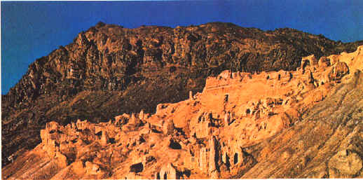
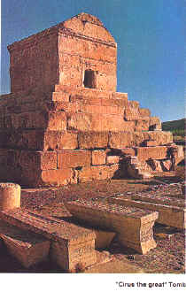
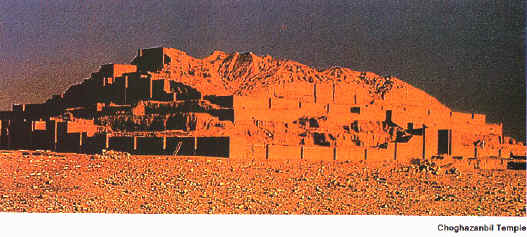

مـعـمـاري قـبـل از اسـلام
معـماري ايراني را بايد بطور صحـيح از اعـماق تاريخ ايـن سرزمـيـن کهـن مـورد بررسي قـرار داد.
معـماري ايراني به شـش قـرن قـبل از ميـلاد مسـيح باز مي گـردد، که مـشـخـصات هـر دورهً معـماري را در دوره هاي مـخـتـلف تاريـخـي شـرح مي دهـيـم :
1- معـماري دوران ماقـبـل تـاريخ تـا زمان حـکـومت مـادهـا.
2- معـماري از زمان حکـومت مـادهـا تـا پـايان دوره حـکـومت سـاسـانـيـان.
در رابـطه با معـماري ايران، بايـد به خـوانـنـدگـان يـادآوري شـود، تـغـيـيـراتي کـه در رابـطه بـا هـنـر پـيـشـيـنـيان ايـران در معـماري داده شـده و نـحـوهً ساخـتمان سازي آن دوران. در سخـني کـوتاه مـي تـوان به : حکـاکـي بـر روي سـنگ، گـچکـاري، نـقاشـي، آجرکـاري، آئـيـنه کـاري، کـاشـي کـاري، مـوزائـيـک کـاري و ديـگـر کـارهـاي تـزئـيـني اشـاره کرد.
الـبـتـه مـا بايـد استـثـنـاهـايي هـم بـراي ساخـتـمان هـاي چـنـد شـکـلي کـه بـراي مـواردي خـاص اسـتـفـاده مي شد، قـائـل شـويم. اين گـونـاگـونـي بـرآمـده از نـيـازهـاي خـاص مـردم در زمـانـهـاي مـتـفـاوت بـوده است.
هـنـرمـنـدان ايـراني بـه دنـيـا ثـابـت کـردن کـه تـوانائـي هـاي بالايي دارنـد و شـامـل احـتـرام بـسيار، بـخـاطر اثـرهـاي تـاريخـي مـنـحـصر بـفـرد فـراوانـي کـه از خـود بـجـاي گـذاشـتـه، هـسـتـند.

بـنـظر مـشکـل مي رسد که بـتوان معـماري ايراني را از زمانـهـاي بـسـيـار دور تـا بـحـال طـبـقـه بـنـدي کرد. اما، تـرتـيـبات زيـر مـي تـواند چـشـم انداز وسـيـعـي از ايـن کـارهـا در اخـتـيـار شـمـا قـرار دهـد: کـلـبه هـاي ماقـبل تـاريـخ، شهـرهـا و قـصـبه هاي اولـيه، اسـتحـکـامات و دژهـاي نـظـامي، معـابـد و آتـشـکـده ها، مـقـبـره ها و آرامـگـاه هـاي بـزرگ، مـکـانهـاي عـظـيـم تـاريـخـي، سـدهـا و پـلـهـا، بـازارهـا، حـمام هـا، جـاده هـا، مسـاجـد عـظـيـم، بـرجـهـا و مـنـاره هـا، ساخـتـمانهـاي مـذهـبـي و محـلهـايي از دوران اسلامي، و هـمچـنـيـن بـنـاهـا و يـاد بـودهـاي گـسـتـرده در کـشـور ايران. از ديگـر چـيـزهـاي مهـمي که بـرروي معـماري ايراني تـاثـيـر گـذار بوده است، شـرايط مهـم آب و هـوائي در فـلات ايران بوده است. بطور مـثـال سـبک معـماري در شـمال کـشـور و کـوهـپـايـه هاي ايران بـا سـبک معـماري در جـنـوب و کـوير ايران تـفـاوت دارد. اکـنـون با مصـادف شـدن بـا اطاعـات تـمام نـشـدنـي و حـيرت آوري کـه امـکـان آن در هـيچ کـشور ديـگـري نـيـست، نگـاهـي داريم گـذرا بـه معـماري ايراني.
صحـبت کردن در مـورد معـماري باستاني، بدون ايـنکـه نـمونه هايي از آن وجود داشتـه باشـد تـقـريـباً غـيـر مـمـکـن است.
يکي از قـديـمي ترين بـناهاي کـشف شده در فلات ايران مربـوط مي شود به بـناي رنگ شـده " زاغ تـپـه " در قـزوين. در تاريخ گـذشـته کـه مربوط مي شود به قـرن هـفـتم و اوايل قـرن شـشم قـبل از ميـلاد، بايـد بـسيار مورد رسيدگـي قـرار گـيرد که در آن زمان قـبل از تاريخ، چـگـونـه و با چـه وسائـلي اين بـنا را آراستـه کـرده اند. از اين بـنا بـراي جـمع شـدن و اجـتماعـات استـفاده مـي شده است.
در اين بـنا از شومـيـنه براي گـرم کـردن ساخـتمان در فـصلهاي سرد سال اسـتـفاده مي شده است. هـمـچـنـين محـلي بـراي درست کردن کـباب داشـتـه است. هـمچـنـين اين ساخـتمان دو محـل براي نگـهـداري ابزارها و وسائـل، بعـلاوه اتاقـي کـوچـک که از آن به عـنـوان نـشـيـمن استـفاده مي کردند. ديـوارهـا بـوسـيله نـقاشـي از بـز کـوهـي تـزئـيـن شـده است. بـه احـتـمال خـيـلي زيـاد از اين مـکـان براي انجـام مراستم مـذهـبـي خـود استـفاده مي کـردنـد.
تـپـه سـيالک در نـزديکـي کـاشان نـيـز يکي ديگـر از اين مکـانهـاي تـاريـخي است، که بـه قـرن شـشم و پـنجـم قـبل از مـيـلاد بـرمـي گـردد. |
 |
اولين بار که مردم به منطقه سيالک رفـتـند، نمي دانستـند که چگـونه بايد خانه ساخت، و زير کـلبه هايي که با برگ درخـتان تهـيه شده بود زندگـي مي کردند. اما بزودي آنهـا فرا گـرفـتـند که چگـونه با گـل، خشت خام درست کرده و مورد مصرف در خانه سازي قرار دهـند.
در قـرن چهـارم قـبل از مـيـلاد مسيح مردم سيالک بصورتي جامع شروع کردند به بنا نهادن بناهـاي جـديد، که بخوبي مشخص است. اين بناهـا بصورتي يکجا و توده، و تماما تهـيه شده از آجر خام بود. اين آجـرهاي اوليه کـه بـصورتي بـيـضـي شکـل تهـيه مي شد، در آفـتاب گـذاشته شده و خشک مي شدند؛ و بعـد از آن مورد استـفاده قـرار مي گـرفـتـند. معـماري اين دوره تـمام بـناهـا را با رنگ قـرمز تـزئـين کرده و تمام درهاي اين بـناهـا کوتاه و باريک بوده و قـد درها بـيشتر از 90 - 80 سانـتي مـتر نبود.
تـپـه حسن در نزديکي دامغـان، تـپه ايلـبـليس در 72 کيلومتري کـرمان، و تـپه حسنـلو در آذربايجان غـربي از بـناهايي هـستـند که بوسيله حفاري هاي باستان شناسي از زير خاک بـيرون آورده شده اند.

در حفاري هاي تپه حسنلو، سه بناي عـظيم کـشف شد که تمام آنهـا با نـقـشه اي يکسان درست شده بودند. اين بـناها به 1000 - 800 سال قـبل از مـيلاد مسيح بـرمي گـردند. تمام آنهـا داراي دروازهً ورودي، حـياط سنگـفرش شده، اتـاقـهـا و انـبار بوده اند.
در معـماري تـپه حسنلو، ساختمانهـا بـنـظر از چوب بنا شده اند؛ مربع و بصورت برج با پـايه هاي چـوبي که بدون برش بصورتي عمودي از آنهـا بعـنوان پايه و ستون استـفاده شده بود. يکي از اتاقـهـا بصورتي سنگـفرش شده با خشت خام کشف شد. نکـته جالب توجه اينکه اتاقي ديگـر را که بعـنوان آشپـزخانه از آن استـفاده مي شده داراي جاهاي مخصوص با شومينه دور آنها بود.
يکي از معـماريهاي مهـم ايران مربوط است به قرن 13 قـبل از ميلاد؛ معـبد چـغـازنـبـيل ( 1250 قبل از ميلاد ) است که در کنار رودخانهً کرخه در استان خوزستان در جنوب ايران قرار گـرفـته است. اين معـبد بوسيله "هـونـتاش هـوبان" پادشاه ايلام بر روي خرابه هاي شهر باستاني "دور - آنـتـش" ساخته شده بود.
اين معـبد نشانگـر اوج و شکوه معـماري در آن دوره است. اين بـنا بصورت چـهـارگـوش و به صورت يک ساخـتمان پـنج طبقه است، که هـر طبقه از طبقه قـبلي کوچکـتر است و نمائي بصورت مخروطي را نشان مي دهـد. معـبد اصلي در آخرين طـبـقـه ساختـه شده بود. موادي که در ساختمان اين معـبد بکـار رفـته است، بـيـشـتر از آجرهـاي پـخـته لعـاب دار هـمراه با ساروج بـسيار قـوي بوده است.
گـنـبد غـربي معـبد چـغازنـبـيل که بصورتي ماهـرانه ساخته شده بود هـنوز هـم پس از گـذشت سـه هـزار سال از تاريخ آن بصورتي عـجـيب و حيرت آور در وضعـيتي خوب بسر مي برد. ساخـتـن طاقـهـاي هـلالي شکـل برروي راهـروهـا و پـلـکـان هـاي داخل معـبـد نـشـانگـر مـوفـقـيت فوق العـاده و شگـفت آور معـماري در ايران باستان است. چـيـزي که باعـث تعـجب و شوک بـسيار در معـماري چـغـازنبـيل است، اينکه ابـتـکار هـنـرمندان آن دوره در اخـتراع و ساختـن يک سيستم جديد که آب آشامـيدني ساخـتمان را تهـيه مي کرده است. آب تسويه شده بوسيله عبادتـگـران و پـرستـشگـران و ساکـنين آن منطقه مورد استـفاده قرار مي گـرفت.
بازگشت
|